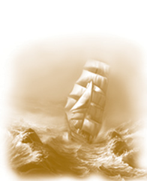

Có thể bạn còn nhớ câu chuyện về Bethany Hamilton, một vận động viên lướt sóng đẳng cấp quốc tế đã bị cá mập tấn công và cắn đứt một cánh tay khi cô mười ba tuổi, đang lướt sóng ở Hawaii. Trước khi bị cá mập tấn công, cô là vận động viên lướt sóng nổi tiếng, nhưng sau bi kịch đó khi cô trở lại với sự nghiệp thể thao, ngợi ca Chúa và cám ơn vì hồng phước của Người, cô được triệu triệu người trên thế giới ngưỡng mộ vì tinh thần dũng cảm và niềm tin đáng kinh ngạc. Giờ đây cô đi khắp thế giới khích lệ mọi người chia sẻ niềm tin với cô.
Mục đích của cô là “nói với mọi người về niềm tin của tôi đối với Chúa để mọi người biết rằng Người luôn yêu thương họ và để giải thích cho mọi người biết ngày hôm đó Chúa đã quan tâm, che chở cho tôi như thế nào. Bị cá mập tấn công, tôi đã mất 70% lượng máu trong cơ thể. Nếu ngày hôm đó Chúa không che chở thì tôi đã không có mặt ở đây ngày hôm nay”.
Trước khi gặp Bethany, tôi chưa biết tường tận về tai nạn đó, và tôi không hiểu được cô gái trẻ ấy đã cận kề cái chết như thế nào. Cô nói cho tôi biết cô đã không ngừng cầu nguyện khi người ta đưa cô tới một bệnh viện cách bờ biển bốn mươi lăm phút đi xe hơi và người phụ giúp công việc y tế đã thì thầm vào tai cô những lời động viên như sau: “Chúa sẽ không bao giờ bỏ rơi hoặc từ bỏ em đâu!”.
Tình hình lúc đó thật gay go. Khi đưa cô tới được bệnh viện và khẩn trương chuẩn bị phẫu thuật, người ta phát hiện ra rằng tất cả các phòng mổ của bệnh viện đều bận. Bethany lịm dần. Nhưng rồi vào phút chót, một bệnh nhân đã hủy bỏ cuộc phẫu thuật đầu gối sắp sửa được tiến hành, vậy nên bác sĩ của ông ấy có thể phẫu thuật cho Bethany. Hãy đoán xem người hủy bỏ cuộc phẫu thuật đầu gối là ai?
Đó chính là bố của Bethany!
Không thể ngờ được, đúng không bạn? Tất cả mọi thứ cho một cuộc phẫu thuật đã được chuẩn bị sẵn sàng, vậy nên họ chỉ việc đưa cô con gái vào thay chỗ của người bố trên bàn mổ và tiến hành phẫu thuật. Cuộc phẫu thuật đó đã cứu sống cô.
Bethany vốn là một cô gái khỏe mạnh, một vận động viên thể thao và là người có thái độ sống tích cực đến kinh ngạc nên đã bình phục nhanh hơn các bác sĩ dự đoán. Chỉ ba tuần sau khi bị cá mập tấn công, cô đã trở lại biển, tiếp tục sống với môn thể thao mà cô yêu thích.
Bethany cho biết rằng niềm tin của cô dành cho Chúa đã khiến cô rút ra kết luận rằng việc cô mất cánh tay là một phần kế hoạch của Chúa dành cho cuộc đời cô. Thay vì cảm thấy buồn khổ và tiếc cho bản thân mình, cô chấp nhận điều đó. Trong cuộc thi dành cho các vận động viên lướt sóng hàng đầu thế giới cô giành vị trí thứ ba mặc dù cô chỉ còn một cánh tay. Cô tâm sự rằng xét theo nhiều khía cạnh, việc mất cánh tay lại là một may mắn đối với cô bởi vì giờ đây bất cứ khi nào cô thành công trong một cuộc thi lướt sóng thì điều đó cũng truyền cảm hứng cho những người khác, khiến họ tin rằng cuộc sống của họ không có bất kỳ giới hạn nào!
“Chúa đã đáp lại lời cầu nguyện của tôi, đã sử dụng tôi. Khi mọi người nghe câu chuyện của tôi chính là khi Chúa nói với mọi người”, cô nói. “Nhiều người nói rằng qua câu chuyện của tôi, họ thấy mình được đến gần Chúa hơn, bắt đầu tin ở Chúa và tìm được niềm hy vọng cho cuộc sống của chính họ, hoặc được động viên, khích lệ để vượt qua nghịch cảnh. Khi nghe họ nói như thế, tôi tạ ơn Chúa bởi không phải là tôi làm được gì cho họ - mà chính Chúa là người đang giúp họ. Tôi cảm thấy rất vui bởi Chúa đã cho phép tôi trở thành một phần trong kế hoạch của Người”.
Bạn không thể không cảm thấy vui trước tinh thần lạc quan và sự dũng cảm tuyệt vời của Bethany. Nếu sau khi bị cá mập tấn công, cô bỏ lướt sóng thì cũng chẳng ai trách cô được. Chỉ còn một cánh tay, phải nỗ lực học cách giữ thăng bằng trên ván lướt để thích nghi với hoàn cảnh mới, nhưng cô đã không quản ngại khó khăn. Cô tin rằng dù điều tồi tệ nào xảy ra, thì trong cái rủi vẫn có cái may. Điều ấy cũng đúng với bạn đấy, bạn ạ!